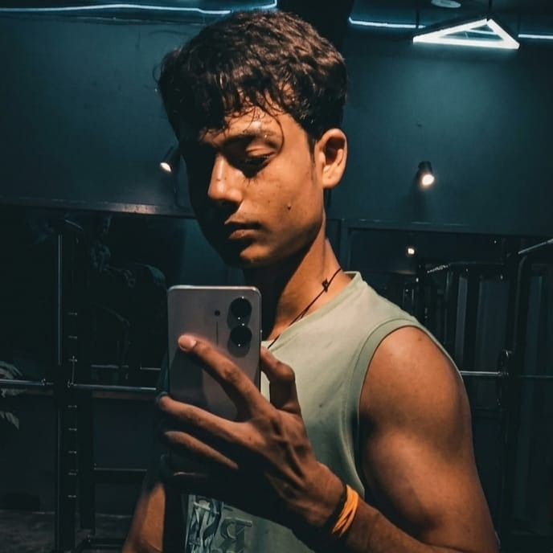
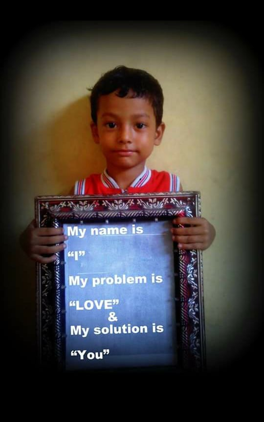

CRAFTING HIGH-RETENTION STORIES AT THE EDGE OF AI & MOTION.
Creative strategist, AI-native producer, and digital media coordinator with hands-on experience in project production, kinetic motion design, and internet trend storytelling.
Skilled at synthesizing deep internet research into 3-second viral hooks, engineering fast-paced explainer reels, and coordinating multi-platform workflows ready to support creator studios (e.g. Sarthak Goswami).

NO PASSIVE AUDIENCES.
NO WASTED SECONDS.
In modern vertical video and long-form YouTube, content doesn't compete with other videos—it competes with the user's thumb hovering over the screen.
As an AI-native producer, I don't treat editing as mere stitching of clips. It is a psychological pipeline engineered around four core tenets:
The 3-Second Rule
Every video opens with a sensory contract: a pattern interrupt, a provocative statement, or a visual paradox that earns the next 15 seconds.
Kinetic Pacing
Eye-movement choreography. Never leave the eye resting on a static frame for more than 1.2s. Dynamic zoom-ins, callout badges, and tracked text.
AI Research Synthesis
Leveraging LLMs and generative pipelines to ingest 50+ articles, geopolitical documents, and trend signals in minutes to script foolproof narratives.
Sound Architecture
Audio drives 50% of retention. Foley swooshes, sub-bass impacts on major points, and surgical compression ensure the voice cuts through the mix.
INTERACTIVE REEL SIMULATOR.
Experience my production pipeline in action. Toggle production layers to see how raw concept transforms into high-retention media.
STOP SCROLLING. HERE IS WHY 99% FAIL.
Production Layer Inspector
Toggle active video components to inspect the construction.
THE EARLY DAYS & THE CRAFT.
Visual communication didn't start with algorithms. It began with instinct, curiosity, and an unyielding obsession with audience emotion.

The First Creative Frame
Storytelling started before I knew what retention pacing was. From holding up handwritten frames and dissecting pop-culture memes to engineering viral hooks for modern creator studios.
The medium evolved from framed boards to 60fps vertical reels, but the obsession with connecting with an audience never changed.

Commerce Discipline Meets Velocity
Pursuing B.Com at the University of Delhi (Class of 2026). Grounded in commercial principles, ROI-focused audience acquisition, and structured business communication.
I give Titanix Media and collaborative studio teams a producer who understands budget, analytics, and deliverable discipline as deeply as motion graphics.
VIRAL HOOK ARCHITECTURE ENGINE.
Select a niche and a psychological trigger. See the exact multi-sensory execution (Spoken Script + Visual Cue + Sound Design) I engineer for the first 3 seconds.
"You think this conflict is about land. It's actually about a submarine cable 8,000 miles away."
Fast zoom into ocean cross-section + kinetic map telemetry callouts
Sub-bass 808 drop + glitch static hit
CORE SKILLS & ARSENAL.
Bridging cutting-edge AI generation tooling with classic high-craft video production and digital distribution.
AI & Creative Tech
Supercharging production pipelines with generative AI to compress hours of manual research and asset creation into minutes.
- Generative AI Workflows
- Prompt Engineering
- AI Visual & Audio Generation
- AI-Assisted Script Research
Visual & Motion
Crafting kinetic typography, custom motion graphics callouts, and audio design that retains viewer attention across platforms.
- Kinetic Typography
- Motion Graphics Callouts
- Sound Design & Audio Pacing
- Color Grading & Clean Cut
Content & Social
Data-informed topic research, thumbnail click-through optimization, and viral hook engineering to beat the feed.
- Trend & Topic Research
- Hook Ideation & Scripting
- CTR Thumbnail Strategy
- Audience Retention Metrics
Production & Workflow
Reliable behind-the-scenes coordination, footage asset management, and rapid delivery under tight publishing schedules.
- BTS Shoot Assistance
- Asset & Footage Organization
- Fast-Turnaround Delivery
- Cross-Team Brainstorming
EXPERIENCE & INITIATIVES.
Hands-on entrepreneurship and self-directed media management. Building production muscle across brand delivery and independent channels.
Titanix Media
- Manage end-to-end digital media production for brands, overseeing ideation, AI-assisted scripting, motion design, and final social media delivery.
- Develop dynamic visual graphics, kinetic typography, and narrative pacing tailored to retain audience attention across YouTube and short-form vertical feeds.
- Coordinate multi-project deadlines in fast-paced environments, translating raw assets and creative briefs into polished, platform-ready deliverables.
Digital Producer & Channel Manager
- Conceptualize, script, record, and produce original long-form and short-form media, managing the complete production pipeline independently.
- Conduct AI-accelerated trend and topic research to identify high-performing formats, viral hooks, and audience engagement patterns.
- Craft custom thumbnails, visual storytelling elements, and audio pacing to improve click-through rates and viewer retention.
Social Media Manager & Curator
- Built and managed a niche gaming community page, coordinating fast-turnaround Reels, memes, and trend-driven posts tailored to audience culture.
- Monitored platform analytics, audio trends, and creator formats to optimize posting schedules and maximize organic reach.
BUILD A PROJECT BRIEF.
Inspired by melon.studio's live brief utility. Configure what you need from me, generate a clean markdown brief, and send it directly in one click.
// Generating brief...